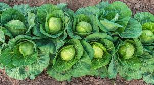
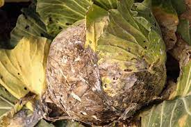

Crop Overview
Cabbage (Brassica oleracea var. capitata) is a leafy green or purple biennial plant grown for its dense-leaved heads. It belongs to the Brassicaceae family and is widely cultivated for its culinary uses.

Cabbage is known for its versatility in various dishes, from coleslaw to sauerkraut. It is a rich source of vitamins and antioxidants, making it a valuable addition to a healthy diet.
Cultivation Practices
Successful cabbage cultivation involves specific practices to ensure healthy growth and high-quality heads. Here are key cultivation practices:
- Planting: Start cabbage seeds indoors or purchase seedlings. Transplant seedlings in well-prepared soil with good drainage.
- Spacing: Plant cabbage at recommended spacing to allow proper air circulation and head formation.
- Watering: Provide consistent moisture, especially during dry periods, to promote optimal growth.
- Fertilization: Use balanced fertilizers to supply essential nutrients for cabbage development.
Varieties
There are several cabbage varieties, each with its unique characteristics. Some popular cabbage varieties include:
- Green Cabbage: The most common variety with smooth, green leaves.
- Red Cabbage: Features deep purple or red leaves and has a slightly peppery taste.
- Napa Cabbage: Also known as Chinese cabbage, it has a mild flavor and elongated, crinkled leaves.
- Savoy Cabbage: Characterized by crinkled and dark green leaves, offering a distinct texture.
Soil Requirements
Cabbage thrives in well-drained, fertile soil with a slightly acidic to neutral pH. Consider the following soil requirements for successful cabbage cultivation:
- pH Level: Aim for a soil pH between 6.0 and 7.0 to ensure nutrient availability.
- Drainage: Well-drained soil prevents waterlogged conditions, reducing the risk of diseases.
- Organic Matter: Incorporate compost or well-rotted manure to enhance soil fertility.
Pest and Disease Management
Cabbage is susceptible to certain pests and diseases that can affect its overall health. Implement the following strategies for effective pest and disease management:
- Cabbage Worms: Use row covers and introduce natural predators to control cabbage worms.
- Slugs: Apply slug traps or diatomaceous earth to protect cabbage from slug damage.
- Clubroot: Rotate crops and choose clubroot-resistant cabbage varieties to prevent this soil-borne disease.

Harvesting and Storage
The timing of cabbage harvest is crucial for achieving the desired head size and quality. Follow these tips for harvesting and storing cabbage:
- Harvest: Harvest cabbage heads when they are firm and reach the desired size. Cut the stem just above the soil surface.
- Storage: Store cabbage heads in a cool and humid environment, such as a root cellar or refrigerator. Use perforated plastic bags to retain moisture.
- Use: Consume harvested cabbage within a few weeks for optimal freshness and flavor.